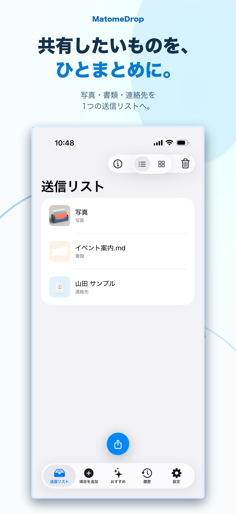
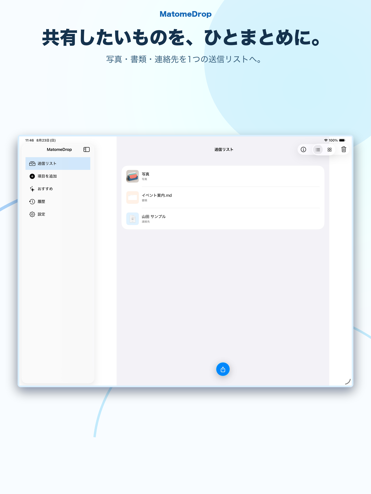
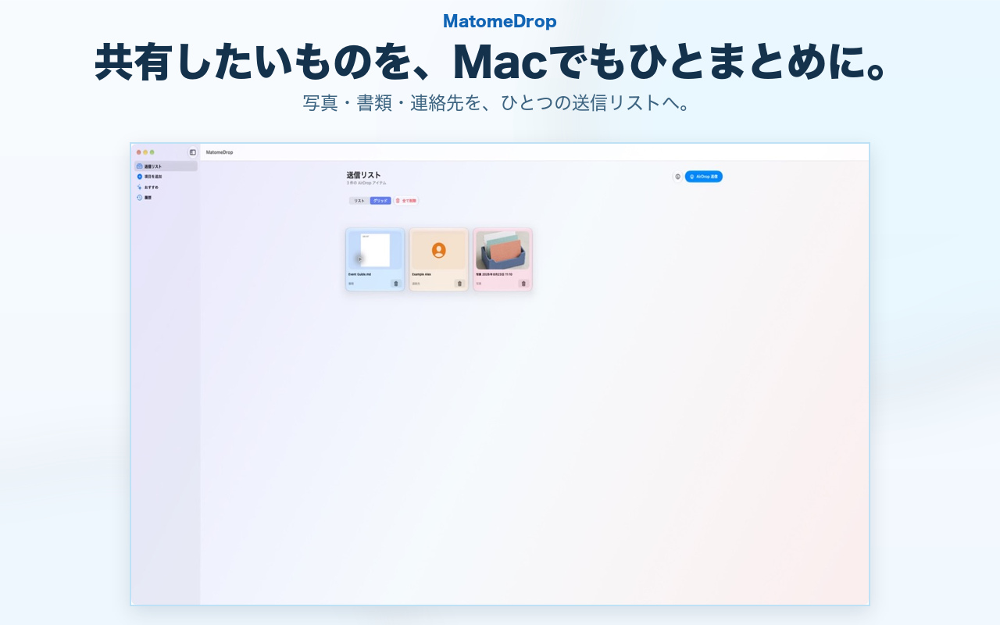

01
旅行の写真と予定表
一緒に送りたい写真と書類を、ひとつの送信リストに。
MatomeDrop
写真・書類・連絡先をまとめて、
必要なときにすぐ共有。
iPhone・iPad・Macで利用可能
探す時間を、もっと短く。
写真は写真アプリ、書類はファイル、連絡先はアドレス帳。あちこち探していたものを、共有前にMatomeDropへ。
01
一緒に送りたい写真と書類を、ひとつの送信リストに。
02
資料に添える連絡先も、必要な項目を選んで準備。
03
履歴やおすすめから、以前使った項目を探しやすく。
One send list
写真を選んだあとに、書類や連絡先も追加。同じ送信リストで、送りたいものが揃っているか確認できます。
連絡先は、名前やメールアドレスなど、相手に渡す項目を選んでから共有できます。
iPhone / iPad / Mac
手元で選んで、すぐ共有の準備。

広い画面で、送る内容を確認。


History & recommendations
過去の項目を送信リストへ戻して、次の共有を準備できます。
端末内で扱う利用情報をもとに、共有候補を見つけやすくします。
Privacy
アカウント不要。開発者による個人データの収集なし。
送信リストや履歴は端末内で処理・保存されます。広告SDK・解析SDK・トラッキング技術は使用しません。AirDropやiCloud写真など、AppleのサービスにはAppleの設定とプライバシーポリシーが適用されます。
プライバシーポリシーを読む →FAQ
必要ありません。アカウントを作らずに使えます。
はい。名前やメールアドレスなど、共有する項目を選べます。
履歴から項目を送信リストへ戻して、共有の準備ができます。元の項目の状態によっては選び直しが必要です。
はい。Mac版は現在ご利用いただけます。Mac App Storeで見る →
サポートページからお問い合わせください。問題の説明に不要な写真・連絡先・書類の添付はお控えください。